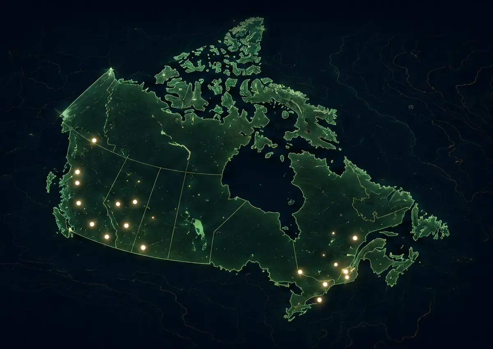

Make the right business easier to find.
Technical SEO, content architecture and conversion improvements built around relevant search intent and useful customer journeys.
SEO & growth with a clear purpose.
Search visibility suffers when pages compete with one another, content does not answer the query or technical issues prevent discovery. We bring those layers into one prioritized improvement plan.

What we can help you build
Technical foundations
Review crawlability, indexation, metadata, canonicals, redirects and performance. Fix issues according to their likely business impact.
Search & content strategy
Map topics to pages and identify the questions useful content should answer. Avoid thin location pages and repetitive keyword-led writing.
Measurement & conversion
Connect search visibility with the actions that matter: inquiry, calls and project conversations. Define tracking without collecting unnecessary personal information.
A clear process
- Review the site and available search and analytics data.
- Map intent, identify technical issues and prioritize opportunities.
- Implement the agreed content and technical improvements.
- Review performance over time and refine the next priorities.
Built for everyday use
The objective is relevant discovery and clearer paths from search to action. Ranking, traffic and lead outcomes depend on competition, execution and time; they are never guaranteed.
Tools & handover
Google Search Console, analytics and crawl diagnostics can inform the work once access is available. Structured data is used only for accurate, visible content.
Questions before you start
Can you guarantee first-page rankings?
No. Responsible SEO work can improve the foundations and relevance of a website, but rankings depend on factors outside any studio’s control.
Is SEO included in a website build?
Technical foundations can be included. Ongoing research, content production and performance review are separate scope decisions.
Do you support local SEO?
Yes, when the business information and service relevance are genuine. We do not invent offices or create duplicate location pages.